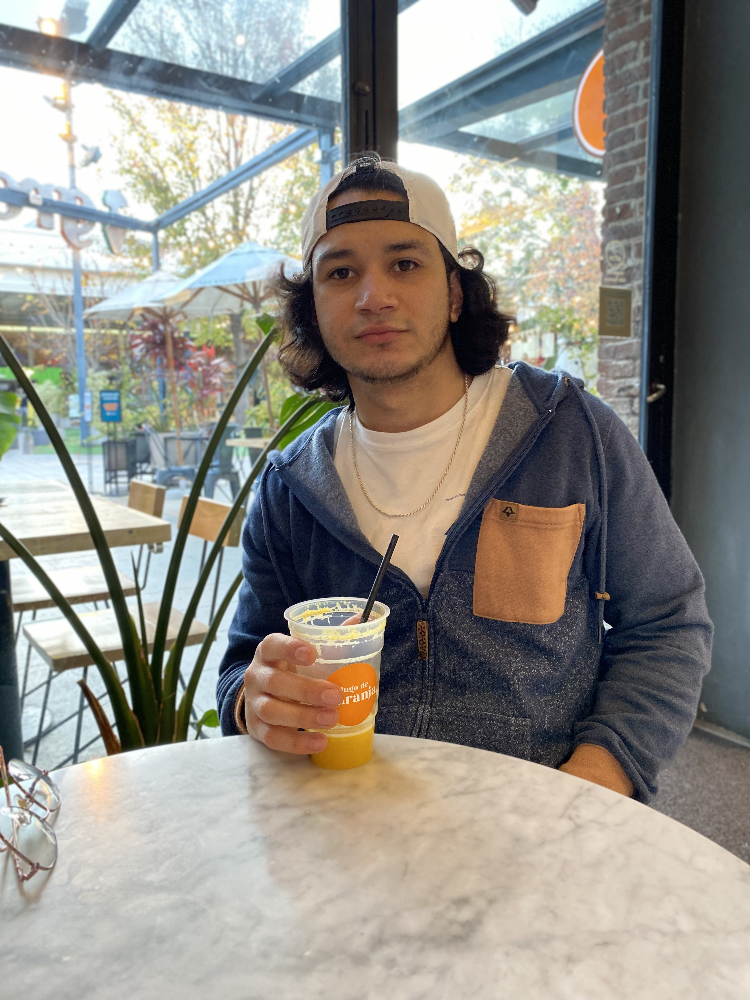

Sobre mí
¡Hola! Soy José Alberto Figueroa, estudiante y desarrollador en formación. Me apasiona la tecnología, el diseño web y aprender nuevas herramientas para crear soluciones digitales. Mi objetivo es incorporarme al mundo laboral en el área de IT, adquirir experiencia práctica y aplicar mis conocimientos técnicos en el desarrollo de soluciones tecnológicas eficientes, escalables y orientadas a la innovación.


Proyectos
Contacto
Email: josearies.9811@gmail.com